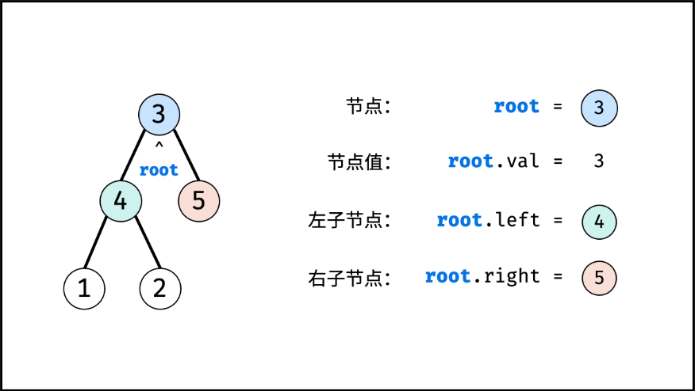

数据结构简介
数据结构是为实现对计算机数据有效使用的各种数据组织形式，服务于各类计算机操作。不同的数据结构具有各自对应的适用场景，旨在降低各种算法计算的时间与空间复杂度，达到最佳的任务执行效率。
树:
树是一种非线性数据结构，根据子节点数量可分为二叉树和多叉树，最顶层的节点称为根节点 root。以二叉树为例，每个节点包含三个成员变量：值 val、左子节点 left、右子节点 right。
1 | class TreeNode: |
如下图所示，建立此二叉树需要实例化每个节点，并构建各节点的引用指向。
1 | # 初始化节点 |

完全二叉树是一种特殊的二叉树，它的特点是：除了最后一层，其他层都是满的；最后一层的节点都靠左排列，中间不能有空位。
举个例子：
1 | 1 |
- 前两层是满的；
- 第三层（最后一层）有 2 个节点（4 和 5），而且紧挨着靠左，没问题。
这也是完全二叉树（最后一层只有最左边一个节点）：
1 | 1 |
但这不是完全二叉树：
1 | 1 |
- 因为第 2 层的左孩子（2）右边有节点（5），但左边却空着（没有左孩子），违反了“靠左连续”的规则。
为什么“完全二叉树”重要？
比如下面这个树：
1 | 1 |
用数组存就是：[1, 2, 3, 4, 5]
- 节点i的左孩子在位置 2*i + 1
- 右孩子在 2*i + 2
- 父节点在 (i-1)//2, // 是Python中的整数除法（向下取整）。
这正是堆（heap） 用数组实现的基础！
堆:
“堆”是一种特殊的树形数据结构，通常用完全二叉树来实现，主要用来快速找到最大值或最小值。
简单理解：
- 最大堆（大顶堆）：每个父节点的值都 大于等于 它的孩子节点。所以根节点是最大的。
- 最小堆（小顶堆）：每个父节点的值都 小于等于 它的孩子节点。所以根节点是最小的。
举个生活中的例子：
想象一堆书，你总是想最快拿到最重的那本（或者最轻的那本）。堆就像一种整理方式，让你不用翻遍所有书，就能立刻拿到目标那本。
堆的两个特点：
- 形状规则：是一棵“完全二叉树”（从上到下、从左到右填满，没有空洞）。
- 堆序性质：父节点和子节点之间有大小关系（最大堆 or 最小堆）。
有什么用？
- 找前 K 个最大/最小的数
- 实现优先队列（比如医院急诊，病情最重的先处理）
- 堆排序（一种排序算法）
在 Python 中，可以用 heapq 模块来操作堆，默认是最小堆。
1 | from heapq import heappush, heappop |
总结一句话：堆 = 能快速拿最大/最小值的“聪明堆叠”。